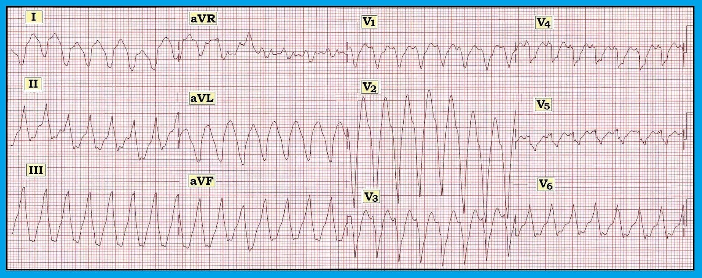
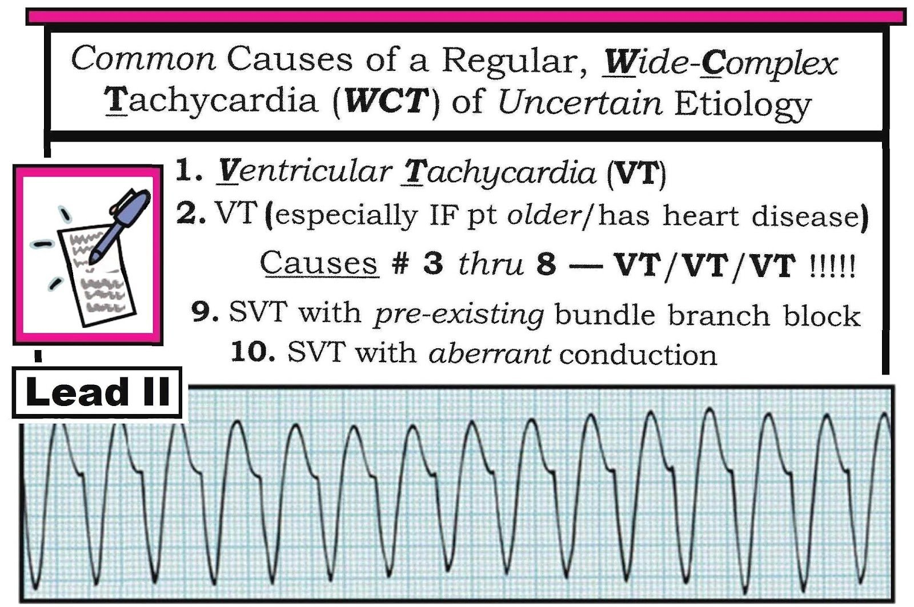
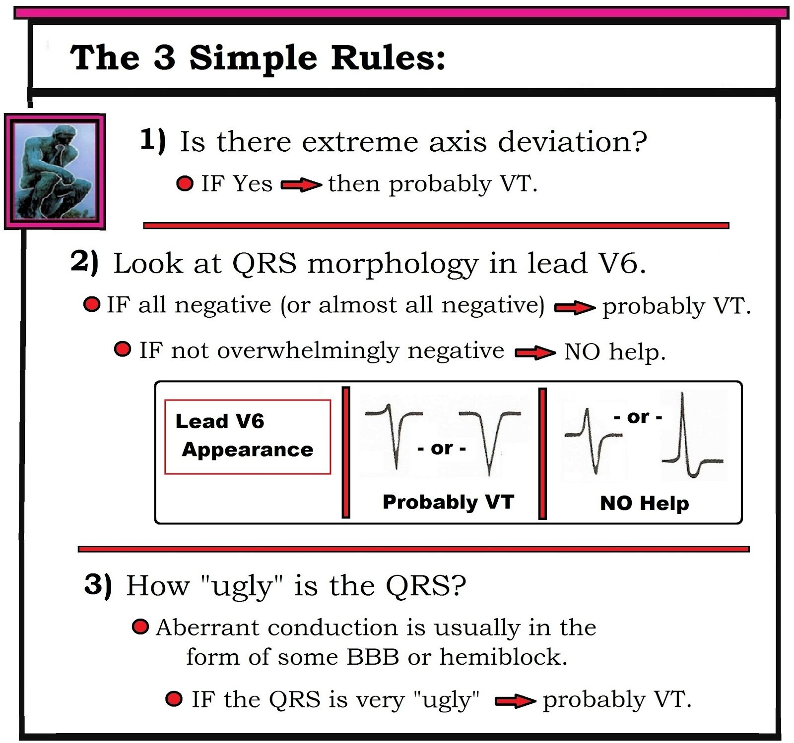
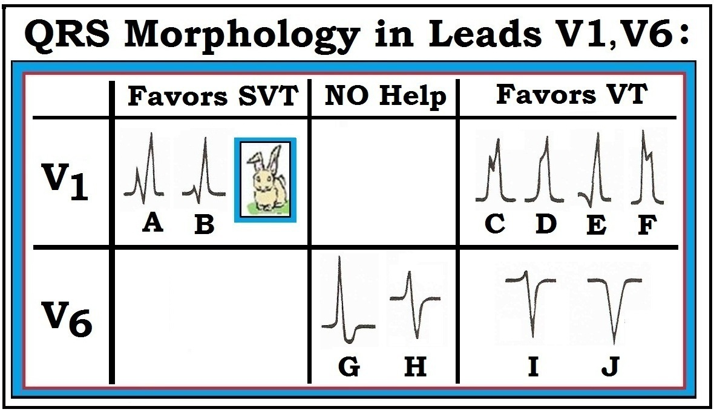
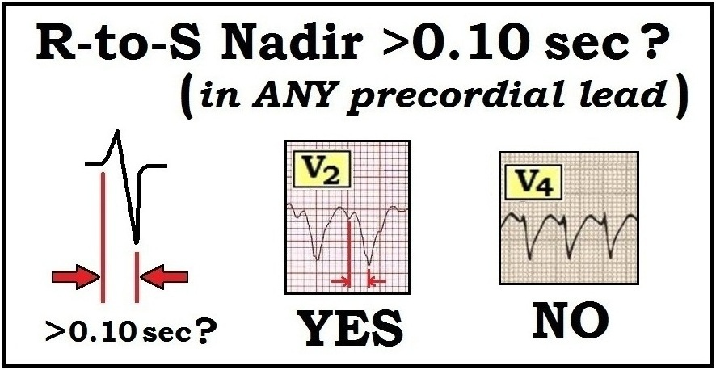
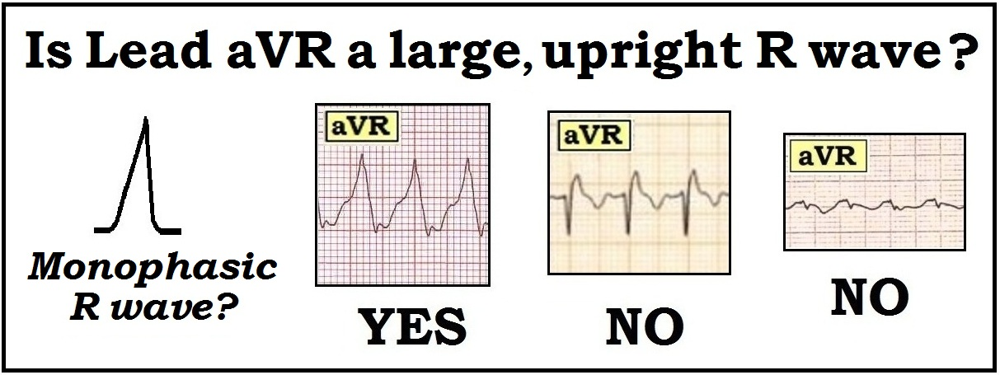

ECG Blog #42 — Tiêu chuẩn nào? — VT hay dẫn truyền lệch hướng?
Điện tâm đồ ở Hình 1 — được ghi từ một bệnh nhân đang tụt huyết áp.
- Có bao nhiêu lý do bạn có thể nêu ra để ủng hộ chẩn đoán VT (nhịp nhanh thất – Ventricular Tachycardia)?


==========================
LƯU Ý: Vì bài Blog này khá dài — chúng tôi đưa tất cả các Bảng và Hình lên ĐƯỜNG LINK (ở Blog 42-bis) — này để tiện xem song song. Các Bảng/Hình cũng có ở cuối bài này.
==========================
TRẢ LỜI cho Hình 1: Điện tâm đồ 12 chuyển đạo trong Hình cho thấy một nhịp nhanh QRS rộng đều (WCT – Wide Complex Tachycardia) với tần số ~180/phút. Không có sóng P xoang. Nhịp này là VT bền bỉ — và bệnh nhân cần được điều trị bằng điện ngay lập tức (sốc điện chuyển nhịp đồng bộ hoặc khử rung). Có thể nêu nhiều lý do ủng hộ chẩn đoán xác định VT bền bỉ. Các lý do này bao gồm:
1) Về mặt thống kê — ít nhất 80% tất cả các nhịp WCT đều có căn nguyên chưa rõ là VT. Khả năng VT tăng lên trên 90% NẾU bệnh nhân ở độ tuổi trung niên trở lên — và đặc biệt nếu bệnh nhân có bệnh tim nền.
- Mặc dù đôi khi nhịp WCT đều có thể do căn nguyên trên thất kèm blốc nhánh có sẵn từ trước hoặc dẫn truyền lệch hướng — luôn phải coi là VT cho đến khi chứng minh được điều ngược lại (Xem Bảng 1 bên dưới hoặc tại 42-bis). Không chỉ thường gặp hơn nhiều so với các nhịp SVT QRS rộng — VT còn là loạn nhịp có thể đe dọa tính mạng.
2) Có trục lệch cực độ. Trục lệch trái hoặc lệch phải mức độ nhẹ đến vừa có thể gặp trong các nhịp trên thất. Tuy nhiên, hoàn toàn âm ở một trong hai chuyển đạo I hoặc chuyển đạo aVF gợi ý trục lệch cực độ, và gần như tự nó đã đủ để chẩn đoán VT.
3) Phức bộ QRS vừa giãn rộng rõ rệt (tới trên 0.16 giây ở nhiều chuyển đạo) — vừa — QRS thiếu hình dạng có tổ chức (điều mà chúng tôi diễn đạt bằng cách mô tả hình dạng QRS là “xấu xí”…). Cả hai đặc điểm này đều rất gợi ý VT. Dẫn truyền lệch hướng thường biểu hiện hình dạng QRS có tổ chức hơn, phù hợp với một dạng rối loạn dẫn truyền nào đó (blốc nhánh trái hoặc phải, kèm hoặc không kèm blốc phân nhánh).
4) Có bằng chứng trên điện tâm đồ về sự chậm trễ khử cực thất ban đầu. Sự hiện diện của khoảng từ r đến đáy S (r-to-S-nadir) dài hơn 0.10 giây ở một hoặc nhiều chuyển đạo trước tim rất gợi ý VT. Điều này thấy rõ nhất ở chuyển đạo V5.
5) Người ta nên luôn luôn coi là VT cho đến khi chứng minh được điều ngược lại. Bệnh nhân cần được điều trị tương ứng.
==========================
Các nguyên tắc lâm sàng CHÍNH cần áp dụng cho bệnh nhân bị WCT:
Nhiều tiêu chuẩn điện tâm đồ đã được nêu ra để hỗ trợ đánh giá các nhịp WCT. Chúng tôi đã tổng quan chi tiết chủ đề này ở nơi khác (Xem đường link tới các Mục 08.0,09.0 trong phần Tài liệu tham khảo bên dưới). Trong phạm vi ECG Blog #42 này — chúng tôi hệ thống lại các nguyên tắc chính khi áp dụng cho điện tâm đồ và bối cảnh lâm sàng được trình bày ở Hình 1.
==========================
Cách tiếp cận được đề xuất của chúng tôi đối với bệnh nhân có nhịp WCT như sau:
- Trước tiên xác định XEM bệnh nhân có ổn định về huyết động không. NẾU bệnh nhân không ổn định — thì nhịp là gì không còn quan trọng nữa, vì có chỉ định điều trị bằng điện ngay lập tức (sốc điện chuyển nhịp đồng bộ hoặc khử rung).
- NẾU bệnh nhân nhịp nhanh ban đầu ổn định — NHƯNG vào bất kỳ lúc nào trở nên không ổn định — thì khi đó có chỉ định điều trị bằng điện ngay lập tức.
- NẾU chẩn đoán nhịp đã biết là VT — điều trị tương ứng (Xem đường link tới Mục 07.0 trong phần Tài liệu tham khảo bên dưới).
- NẾU chẩn đoán của nhịp WCT đã biết là SVT — thì nên theo một cách tiếp cận khác, tùy theo “phỏng đoán tốt nhất” của chúng ta về căn nguyên của SVT (Xem ECG Blog #40 và đường link tới Mục 13.0 trong phần Tài liệu tham khảo bên dưới).
- Cần có những cân nhắc và biện pháp điều trị đặc biệt đối với bệnh nhân ổn định nhưng có WCT không đều — do có khả năng là xoắn đỉnh (Torsades de Pointes), VT đa hình, và AFib rất nhanh kèm WPW (Xem ECG Blog #36).
- Nhưng NẾU bệnh nhân ổn định — và — nhịp là WCT đều có căn nguyên chưa rõ — thì tập trung chú ý vào một vài đặc điểm điện tâm đồ chọn lọc có thể tăng đáng kể mức độ chắc chắn cho chẩn đoán giả định của chúng ta.
==========================
Dùng tiêu chuẩn điện tâm đồ nào để đánh giá các nhịp WCT?
Có nhiều tiêu chuẩn để đánh giá nhịp WCT. Dưới đây chúng tôi liệt kê những tiêu chuẩn chúng tôi ưa dùng vì cho rằng chúng: i) dễ dùng và dễ nhớ; và ii) rất hữu ích trên lâm sàng:
- Chúng tôi bắt đầu với 3 Quy tắc Đơn giản (Bảng 2). Theo kinh nghiệm của chúng tôi — 3 Quy tắc dễ dùng này là tất cả những gì cần thiết để chẩn đoán VT gần như xác định trong hầu hết các trường hợp.
- QUY TẮC #1: Có trục lệch cực độ không? NẾU có — thì rất có khả năng là VT. Chúng tôi nhấn mạnh rằng trục lệch trái hoặc lệch phải mức độ nhẹ hoặc thậm chí vừa (LAD hoặc RAD) không giúp phân biệt giữa VT và SVT. Nhưng — khi có trục lệch cực độ (như trục lệch phải rõ rệt thấy ở Hình 1 — trong đó phức bộ QRS ở chuyển đạo I âm hoàn toàn) — thì khả năng VT tăng lên rất nhiều. LƯU Ý: "Cách nhanh" để nhận ra có trục lệch "cực độ" — là nếu phức bộ QRS âm hoàn toàn ở một trong hai chuyển đạo I hoặc aVF. Và dù có ngoại lệ (tức là, một số bệnh nhân bệnh tim nặng có thể có bản ghi nền bất thường nặng nề — và một số bệnh nhân LBBB có thể biểu hiện QRS âm hoàn toàn ở chuyển đạo aVF như một phần của LBBB) — việc nhận ra trục lệch "cực độ" là DỄ làm, và thường cung cấp thông tin vô giá.
- QUY TẮC #2: Nhìn vào hình dạng QRS ở chuyển đạo V6. Khi căn nguyên của nhịp là trên thất — gần như luôn luôn có ít nhất một phần hoạt động dương đi về phía thất trái (và do đó dương ở chuyển đạo V6). NẾU có khi nào phức bộ QRS ở chuyển đạo V6 hoặc là âm hoàn toàn hoặc gần như âm hoàn toàn — thì rất có khả năng là VT. Chúng tôi nhấn mạnh rằng chuyển đạo V6 chỉ có ích khi nó chủ yếu âm. Vì vậy, sóng R dương mà chúng ta thấy ở chuyển đạo V6 của Hình 1 không có giá trị chẩn đoán (Xem Hình 2).
- QUY TẮC #3: Phức bộ QRS trong nhịp WCT càng “xấu xí” — thì càng có khả năng là VT. Lý do là dẫn truyền lệch hướng gần như luôn biểu hiện một dạng rối loạn dẫn truyền nào đó (RBBB, LBBB, LAHB, LPHB – hoặc phối hợp giữa chúng) — do sự chậm trễ tương đối ở một hoặc nhiều phân nhánh hay nhánh bó. Ngược lại — VT khởi phát từ một ổ ở thất nằm bên ngoài hệ thống dẫn truyền (và do đó nhiều khả năng rộng hơn và kém tổ chức hơn nhiều trong kiểu dẫn truyền). Phức bộ QRS ở Hình 1 cực kỳ rộng (trên 0.16 giây) và không có hình dạng rõ. Điều này khiến khả năng dẫn truyền trên thất thấp hơn nhiều.
- Có phân ly nhĩ thất (AV Dissociation) trong nhịp WCT không? NẾU có — điều này hầu như chẩn đoán VT. Tuy vậy — phần lớn thời gian, phân ly nhĩ thất sẽ không thấy được trừ khi tần số VT tương đối chậm. Do đó — không có phân ly nhĩ thất thì không có giá trị chẩn đoán. Tuy nhiên, nếu có thì có thể giúp khẳng định. Mặc dù có thể thấy dẫn truyền nhĩ ngược dòng 1:1 ở Hình 1 (dưới dạng khía kín đáo ở sóng ST-T của chuyển đạo II và ở các chuyển đạo trước tim bên) — rõ ràng là không có sóng P xoang bình thường. Vì vậy, không có dấu hiệu phân ly nhĩ thất. (Để biết thêm về phân ly nhĩ thất trong VT — Xem ECG Blog #133).
- Có đồng hướng của phức bộ QRS ở tất cả các chuyển đạo trước tim không? NẾU có khi nào tất cả phức bộ QRS từ V1 đến V6 hoặc đều dương hoặc đều âm — điều này hầu như chẩn đoán VT. Tuy vậy — độ nhạy của dấu hiệu này cực kỳ thấp, nên việc không có đồng hướng ở các chuyển đạo trước tim hoàn toàn không giúp ích gì. Không có đồng hướng ở Hình 1 — vì QRS rõ ràng dương ở chuyển đạo V6.
- Khoảng từ R đến đáy S ở bất kỳ chuyển đạo trước tim nào có bị kéo dài tới >0.10 giây không? Tiêu chuẩn thứ 2 của Brugada để đánh giá nhịp WCT (và tiêu chuẩn thứ 2 của Sasaki) xác định rằng sự chậm trễ trong việc đạt tới đáy S ở bất kỳ chuyển đạo trước tim nào là rất gợi ý VT (Xem Hình 3). Nếu không thấy chậm trễ trong việc đạt tới đáy S — thì không thể kết luận gì. Cơ sở sinh lý của tiêu chuẩn khoảng R đến đáy S kéo dài là đường đi ban đầu của các xung động trên thất thường được dẫn truyền với mức chậm trễ không quá tối thiểu.
- Hầu hết các nhịp WCT đều sẽ biểu hiện phức bộ RS ở ít nhất một chuyển đạo trước tim (NẾU không có phức bộ RS ở bất kỳ chuyển đạo trước tim nào – thì theo tiêu chuẩn thứ 1 của Brugada, nhịp đó là VT!). Điểm cần lưu ý chính là ranh giới của khởi điểm QRS và đáy sóng S không phải lúc nào cũng rõ. Tuy nhiên — khoảng R đến đáy S ở chuyển đạo V5 của Hình 1 có vẻ chắc chắn vượt quá 0.10 giây.
- Có sóng R đơn pha cao ở chuyển đạo aVR không? Trong nhịp xoang bình thường — chuyển đạo aVR biểu hiện phức bộ QRS chủ yếu âm. Điều này phản ánh đường khử cực thất bình thường — đi ra xa phía bên phải (ra xa aVR) — và hướng về thất trái. NẾU có khi nào phức bộ QRS ở chuyển đạo aVR trong WCT dương hoàn toàn — điều này có nghĩa là xung điện phải xuất phát từ một vị trí ở mỏm thất và đi lên về phía đáy tim (theo hướng của aVR). Vì vậy, liếc nhanh chuyển đạo aVR trong nhịp WCT đôi khi có thể cho bạn biết (với độ đặc hiệu gần như 100%) rằng nhịp đó là VT (Xem Hình 4). Tuy vậy — tiêu chuẩn này tương đối kém nhạy, nên phần lớn thời gian hình dạng QRS ở chuyển đạo aVR sẽ không có giá trị chẩn đoán. Chuyển đạo aVR không có giá trị chẩn đoán ở Hình 1.
- Hình dạng QRS có điển hình của dẫn truyền lệch hướng không? Trên thực tế — hình dạng QRS duy nhất có độ đặc hiệu cao cho SVT là hình ảnh RBBB điển hình. Chuyển đạo tốt nhất, hơn hẳn các chuyển đạo khác, để nhận ra điều này là chuyển đạo V1 (Xem Hình 2 bên dưới). Vì vậy, sự hiện diện của phức bộ rsR’ (với ‘tai thỏ phải cao hơn’ và sóng S đi xuống dưới đường đẳng điện) — gợi ý mạnh mẽ một căn nguyên trên thất (A,B ở Hình 2). Ngược lại — bất kỳ hình dạng QRS nào khác ở chuyển đạo V1 (C,D,E,F) đều làm tăng khả năng VT. Điều này bao gồm phức bộ QRS dương, giãn rộng, có khía mà không đi xuống dưới đường đẳng điện (C) – cũng như sóng R đơn pha không có khía (D) — dạng qR (E) — và/hoặc tai thỏ trái cao hơn, có hoặc không có khía (F).
- Đánh giá hình dạng QRS ở Hình 1 — rõ ràng không giống RBBB điển hình (thay vào đó QRS âm hoàn toàn ở chuyển đạo V1). Như đã lưu ý — hình dạng QRS ở Hình 1 “xấu xí” (không có hình dạng rõ) — không gợi ý cả LBBB lẫn RBBB điển hình — và do đó ủng hộ mạnh VT là căn nguyên.
- LƯU Ý: Để có "hình dạng RBBB điển hình" — ngoài phức bộ rsR' mô tả ở trên, còn phải có sóng S tận cùng rộng ở chuyển đạo I và V6. Nếu không có các dấu hiệu này ở cả 3 chuyển đạo then chốt (tức là, chuyển đạo I, V1, V6) — thì không phải là hình ảnh RBBB "điển hình", và độ đặc hiệu để phân biệt VT với SVT sẽ mất đi.
- Thông số lâm sàng: Dù chắc chắn có ngoại lệ — việc bệnh nhân “trẻ tuổi” và trước đó khỏe mạnh trước cơn loạn nhịp thực sự làm cho VT dạng thiếu máu cục bộ ít có khả năng hơn nhiều. Ngược lại, ngay cả trước khi xem các đặc điểm điện tâm đồ cụ thể — NẾU bệnh nhân đến với nhịp WCT đều có căn nguyên chưa rõ là người “lớn tuổi” và có tiền sử bệnh tim đáng kể — thì khả năng thống kê là VT đạt gần 90%.
==========================
LƯU Ý về các thông số lâm sàng:
- Bệnh nhân có “lớn tuổi” không? Mặc dù không có “ngưỡng” tuổi cụ thể cho thế nào là ‘lớn tuổi’ hay ‘trẻ tuổi’ — bệnh nhân ở độ tuổi 20, 30 hoặc đầu 40 tương đối dễ bị SVT hơn so với bệnh nhân trên 55 tuổi. Điều này đặc biệt đúng NẾU người trẻ tuổi này trước đó khỏe mạnh, không có bệnh tim nền đã biết.
- Một nhóm chọn lọc các nhịp VT (có thể tới 5-10% của tất cả nhịp VT) — có thể đáp ứng với Adenosine! Mặc dù một số đặc điểm điện tâm đồ có thể gợi ý một dạng đáp ứng với adenosine của VT (Xem ECG Blog #35) — việc nhận ra VT đáp ứng với adenosine trên điện tâm đồ không phải lúc nào cũng làm được. Nhận thức được thực tế lâm sàng này là cơ sở cho việc thử dùng Adenosine theo kinh nghiệm ở thời điểm sớm trong cách tiếp cận điều trị WCT đều đơn dạng.
- Các dạng đáp ứng với adenosine của VT — nhiều khả năng hơn xảy ra ở người trẻ tuổi không có bệnh tim nền. Chúng thường xảy ra khi gắng sức — và bệnh nhân thường vẫn ổn định huyết động trong nhịp WCT. Vì vậy, ngay cả NẾU một người trẻ trước đó khỏe mạnh đến viện với VT — khả năng nhịp này đáp ứng với Adenosine là cao đến bất ngờ. Tuy vậy — phần bàn luận trên không áp dụng cho ca ở Hình 1, vì bệnh nhân không ổn định và cần được sốc điện chuyển nhịp ngay lập tức. (Để biết thêm về VT ở bệnh nhân không có bệnh tim nền = VT vô căn (Idiopathic VT) — Xem ECG Blog #197).
==========================
TÓM TẮT:
Hãy luôn nghĩ “VT cho đến khi chứng minh được điều ngược lại” — bất cứ khi nào bạn gặp bệnh nhân có nhịp WCT đều với căn nguyên chưa rõ. Điều trị sẽ phụ thuộc vào tình trạng ổn định huyết động và các thông số lâm sàng. Chúng tôi hy vọng việc ôn lại ECG Blog #42 này sẽ giúp bạn tự tin hơn về mức độ chắc chắn tương đối của chẩn đoán nhịp mà bạn đưa ra.
-==========================
==========================
Các Bảng và Hình hỗ trợ cho ECG Blog #42 này (cũng có tại 42-bis):
- Dưới đây là các hình ảnh minh họa chính mà chúng tôi đề cập trong ECG Blog #42 này để hỗ trợ phân biệt các nhịp WCT (Xin xem thêm đường link tới các Mục 08.0,09.0 trong phần Tài liệu tham khảo bên dưới):


==========================


==========================


==========================


==========================


Hình 4: Sự hiện diện của sóng R dương lớn ở chuyển đạo aVR trong nhịp WCT hầu như chẩn đoán VT (vì dấu hiệu này hàm ý khử cực thất bắt đầu từ mỏm tim). Thấy phức bộ QR hoặc phức bộ biên độ nhỏ (ví dụ thứ 2 và thứ 3) thì không có giá trị chẩn đoán.
==========================
TÀI LIỆU THAM KHẢO chọn lọc:
- Brugada P, Brugada J, Mont L, và cs.: A New Approach to the Differential Diagnosis of a Regular Tachycardia with a Wide QRS Complex. Circulation 83:1649-1659, 1991.
- Blomstrom-Lundqvist C, Scheinman MM, Aliot EM, và cs.: ACC/AHA/ESC Guidelines for Management of Patients with Supraventricular Arrhythmias — Executive Summary. J Am Coll Cardiol 42:1493-1531, 2003.
- Vereckei A, Duray G, Szenasi G: Application of a New Algorithm in the Differential Diagnosis of Wide QRS Complex Tachycardia. Eur Heart J 28:589-600, 2007.
- Sasaki K: A New Simple Algorithm for Diagnosing Wide QRS Complex Tachycardia: Comparison with Brugada, Vereckei and aVR Algorithms. Circulation 120:S671, 2009.
- Chen và cs.: A New, Simple ECG Algorithm for Rapid Identification of VT based on Opposing QRS Complexes (OQL) on Limb Leads. JACC 73:9:319, 2019 — BẤM VÀO ĐÂY để xem Hình minh họa cách áp dụng OQL. (LƯU Ý: Tiêu chuẩn OQL đặc hiệu hơn một chút so với tiêu chuẩn "trục lệch cực độ" của tôi ở trên. Tôi không biết liệu OQL có nhất thiết tốt hơn tiêu chuẩn của tôi hay không .... nhưng vì nó mới và có khả năng đặc hiệu hơn — tôi bổ sung tài liệu tham khảo này [10/5/2019]).
- Chính các tác giả này (Chen và cs.) sau đó kết hợp #1) OQL — và/hoặc — #2) R đơn pha ở aVR — và/hoặc — #3) QRS chủ yếu âm ở các chuyển đạo I,II,III — trong đó #3) dễ đánh giá và khác với tiêu chuẩn của tôi, nên đáng cân nhắc! — Chen và cs.: Simple ECG Criteria for Rapid ID of Wide QRS Tachy: the New Limb Lead Algorithm (LLA) — ĐƯỜNG LINK TRỰC TUYẾN —
==========================
— Quay lại ECG BLOG #42-Bis —
==========================
— —
Mời xem các Mục PDF liên quan dưới đây, trích từ ACLS-2013-ePub:
- Mục 06.0 — về Cách dùng Adenosine -
- Mục 07.0 — về VT đã biết -
- Các Mục 08.0, 09.0,10.0 — về Nhịp nhanh QRS rộng đều
- Mục 13.0 — về SVT có căn nguyên chưa rõ -
-----------------------------------------------------------------------